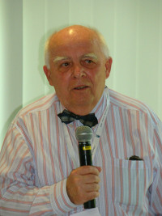

Informatika
Magyar informatikai találmányok
-
Valószínűleg inkább Charles Simonyiként hallhattad a nevét, ugyanis 1968-ban elhagyta Magyarországot Simonyi Károly. Igen komoly szerepet játszott abban, hogy létrejöjjenek a ma ismert szövegszerkesztők, ugyanis részt vett a legelső WYSIWYG szövegszerkesztő fejlesztésében, ami Bravo névre hallgatott. Később a Microsoftnál is ezen a területen tevékenykedett, így részt vehetett a manapság is előszeretettel használt Microsoft Office megalkotásában. Azóta saját lábra állt, 2002 óta már a saját vállalkozásában tevékenykedik. Sikeresen, ugyanis a leggazdagabb amerikaiak listájának rendszeres szereplője. És nem mellesleg a világ egyik első űrturistája, már kétszer megjárta a Nemzetközi Űrállomást (ezzel pedig a második magyar űrhajós is).
-
A LogMeIn technológiájával biztosan találkoztál már, ha használtál életedben távoli elérést, legfeljebb nem tudsz róla. Nos, ez a technika is (részben) magyar, Anka Márton és Michael Simon nevéhez fűződik. Működésének lényege, hogy a távoli elérést biztosító termékek saját távoli desktop protokollt használnak. Minden távoli desktopnak létrehoznak egy SSL tanúsítványt, aminek segítségével biztonságossá teszik a kommunikációt. A céget 2003-ban alapították meg Budapesten, a jelenleg is ismert LogMeIn nevet 2006-ban kapta. Ma már bostoni székhelyű a nagyvállalat, melynek számos országban vannak irodái, és a világ 10 legbefolyásosabb SaaS IT nagyvállalata között tartják számon.
-
Neumann, úgy tűnik, tanárnak is jó volt, ugyanis Kemény János, az időosztásos számítógépes rendszerek megálmodója tőle tanult a Princetoni Egyetemen. Kemény 1963-ban dolgozta ki az alapelvet, amire sok mai megoldás is épül. Hogy mi az időosztásos rendszer? Röviden ez az, ami a hőskorban lehetővé tette, hogy a számítógépek erőforrásait egyszerre többen is használják (lásd még: multitasking), ezzel gazdaságosabbá téve a használatukat. Időosztásos rendszer például a még ma is használatban lévő Unix is. Kemény emellett a BASIC programnyelv megalkotásában is részt vett, ami később a Microsoft által készített operációs rendszerek részeként futott be szép karriert.
- Gábor Dénes nevével talán hasonlóan lehetsz, mint Neumann Jánoséval: hallottad már, de nem biztos, hogy tudod, miről is híres. Nos, Gábor Dénesről főiskolát is elneveztek, ezért, ha máshonnan nem is, onnan ismerős lehet. Amivel viszont ezt kiérdemelte, az a holográfiával kapcsolatos munkája volt, amit egyébként 1971-ben Nobel-díjjal jutalmaztak. Ez megint egy olyan fogalom, amiről mindenki hallott már, de kevesen tudnák megmondani, mit is takar. A holográfia az, amikor egy tökéletes, háromdimenziós képet vetítünk egy adott tárgyról. Gábor Dénes egyébként már 1947-ben kidolgozta a technikát, de a megvalósításra várnia kellett addig, amíg 1961-ben meg nem jelent a lézer – ezzel már kivitelezhetővé vált az elmélet. A holográfia nem egy antik találmány, a benne rejlő lehetőségeket messze nem aknáztuk még ki teljesen, az új kijelzők fejlesztésénél ma is komoly szerepet játszik az innovációban.


3 Híres magyar informatikus életrajza

Kovács Győző
Nagy szerepe volt az első magyar számítógép, az M-3-as létrehozásában.
További információ
Nemes Tihamér
Feltaláló, gépészmérnök, villamosmérnök, a műszaki tudományok doktora, a kibernetika egyik hazai úttörője
További információDömölki Bálint
Az ELTE matematika szakán szerzett diplomát. részt vett az első magyarországi számítógép létrehozásában.
További információ